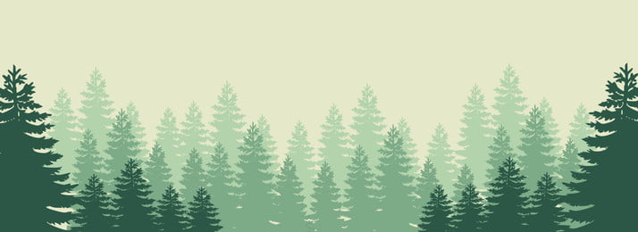

Stop Tree Devastation
Every year, millions of hectares of forests are lost, threatening biodiversity, disrupting ecosystems, and accelerating climate change. This website is here to guide you through a deeper understanding of deforestation—what it is, why it happens, and the wide-ranging consequences it has on the environment, wildlife, and human communities.
You'll also discover practical ways you can get involved, raise awareness, and take meaningful action to help protect and restore our planet's forests for future generations.
Our Message
At the heart of our mission is a deep respect for the natural world. Forests are more than just trees—they are home to countless species, vital to the Earth's climate system, and essential to the livelihoods of millions of people. Yet every year, we continue to lose them at an alarming rate.
We believe that change starts with awareness. That's why this platform exists: to educate, inspire, and empower individuals like you to understand the complex issue of deforestation. From its root causes to its far-reaching effects, our goal is to provide clear, accessible information—and most importantly, to show that everyone can play a role in protecting our planet.
Together, through knowledge and action, we can help preserve forests for future generations.
Our Vision
We envision a world where forests are cherished, protected, and allowed to thrive. A world where communities live in harmony with nature, where economic development no longer comes at the expense of the environment, and where future generations inherit a planet rich in biodiversity and natural beauty.
Our vision is to create a global movement—one rooted in awareness, education, and collective action. By shedding light on the realities of deforestation and promoting sustainable alternatives, we aim to inspire meaningful change at every level: from individual choices to international policies.
Together, we can build a future where forests are not only preserved—but restored.
Our Mission
Our mission is to raise awareness, educate, and inspire action against deforestation across the globe. We are dedicated to empowering individuals, communities, and policymakers to recognize the urgency of forest conservation and the role each of us plays in protecting the Earth's ecosystems.
We aim to:
- Provide accurate, accessible information about deforestation—its causes, impacts, and solutions.
- Advocate for sustainable land use and responsible environmental policies.
- Support global efforts in reforestation, conservation, and ecosystem restoration.
- Encourage mindful choices in daily life, including ethical consumption and reduced environmental footprints.
We believe that informed individuals can make powerful changes. Through education and action, we strive to build a world where forests are preserved, biodiversity is protected, and future generations can thrive in a healthy environment.
Quick Facts
31%
of Earth's land surface is covered by forests
10M
hectares of forest lost annually
80%
of terrestrial species live in forests